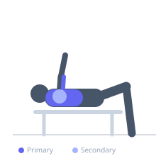
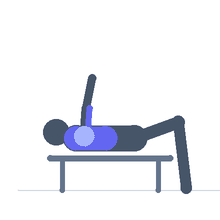

Exercise guide / 2-Board Bench Press
2-Board Bench Press
The 2-Board Bench Press uses two stacked 2-inch boards on the chest, reducing range of motion by approximately 4 inches. This version shifts the mechanical emphasis further toward the triceps and mid-to-upper pressing range, making it a highly effective overload and sticking-point training tool for powerlifters and advanced bench pressers.
Primary muscles
triceps lateral head
triceps medial head
pectoralis major sternal
Secondary muscles
deltoid anterior
triceps long head
Stabilizers
subscapularis
pectoralis minor
Equipment
Standard Barbell
Flat Bench
Optional
Power Rack (Squat Cage)


Starting position
- Lie on a flat bench. A partner holds two stacked 2-inch boards on the chest. Take a shoulder-width or slightly wider grip on the bar.
Setup
- Stack two 2x6 or 2x8 boards. Have a training partner hold them or secure with elastic bands around the torso. Approx 4 inches of reduced ROM.
Steps
- Step 1: Unrack the bar and control the descent to the board stack.
- Step 2: Touch the boards and pause for one second.
- Step 3: Press powerfully back to full lockout.
- Step 4: Lower under control and repeat.
Coaching cues
- Treat the board like the floor — press explosively off it
- Keep tension in the lats throughout
Breathing
- Inhale and brace before the descent. Exhale as the bar passes the sticking point on the way up.
Range of motion
- Bar to board surface only. Full elbow lockout at top.
Tempo
- 3-1-2-0
Common mistakes
- Relaxing the upper back during the touch at the board
- Letting the boards shift position during the set
Safety
- Loads used should be greater than full ROM max — ensure spotter awareness
- Partner must hold boards securely throughout the set
Training
- strength: 1–5 reps
- strength: 3–6 sets
- Rest: {'strength': 240}